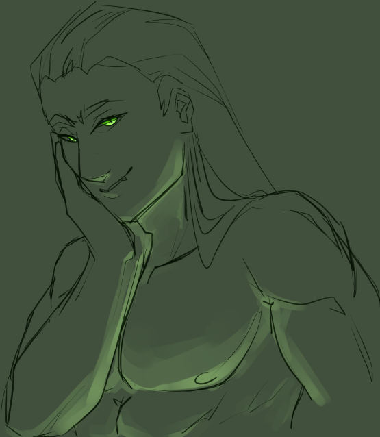
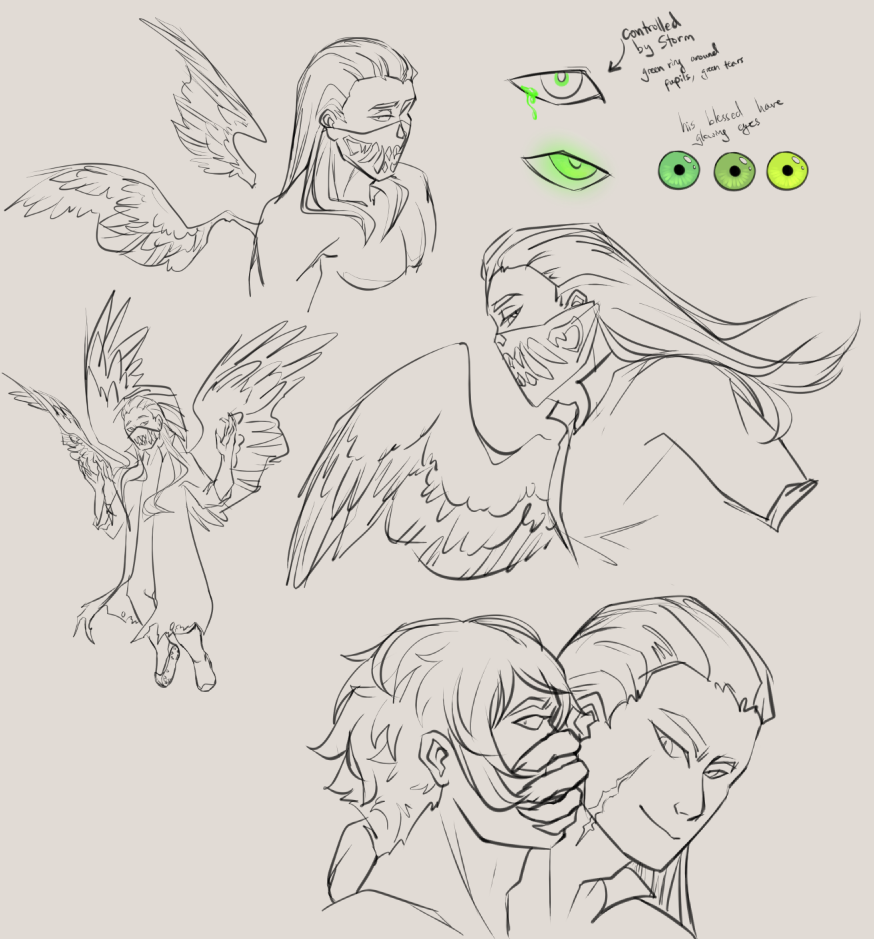
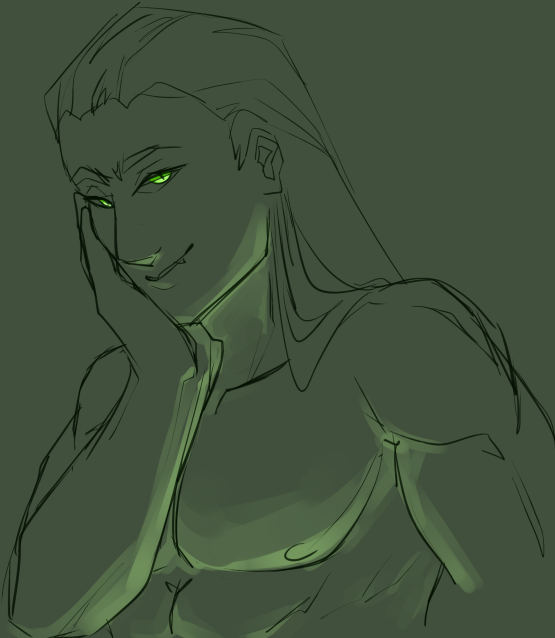
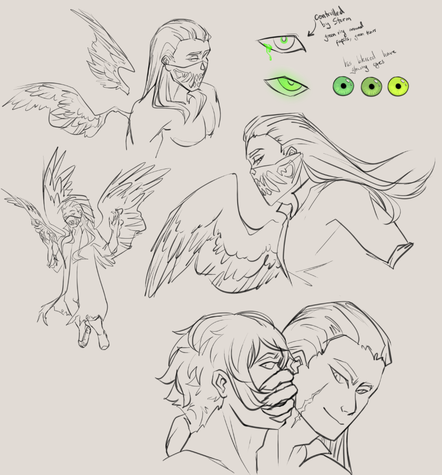

Original headshot sketch from August 2022. At this point, there was no concept for anything beyond (then known as) Dawson's face and small personality details.
Character Concept Projects
Dawson "Storm" Myers is a laidback professional killer and personal project. A character originating from late 2022, he is an ongoing project with detailed lore, concept art and used within various writing exercises and pieces.


 


